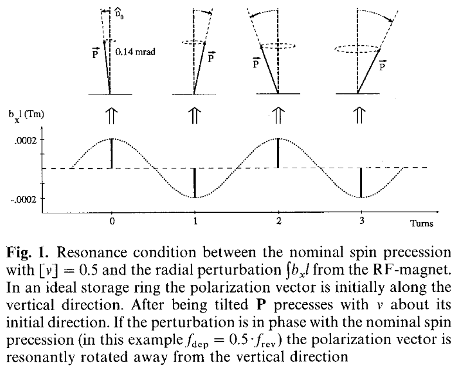
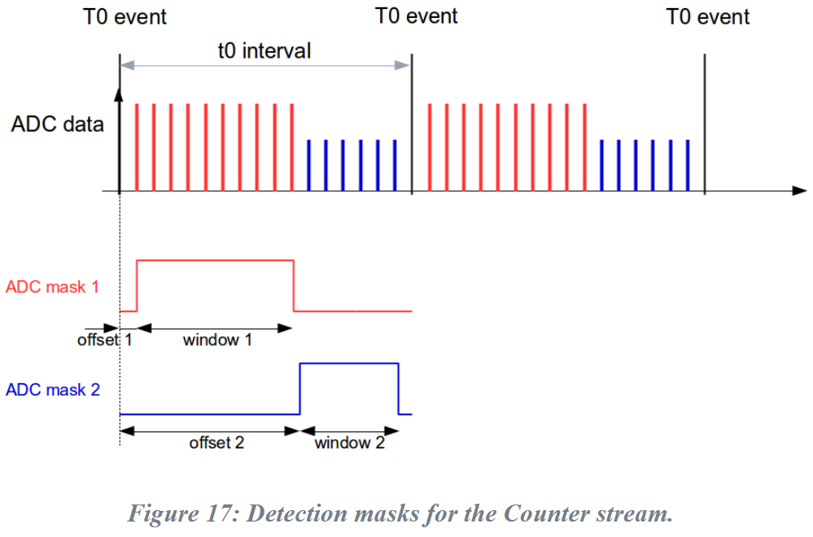
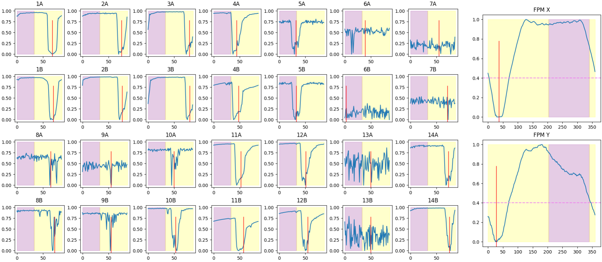
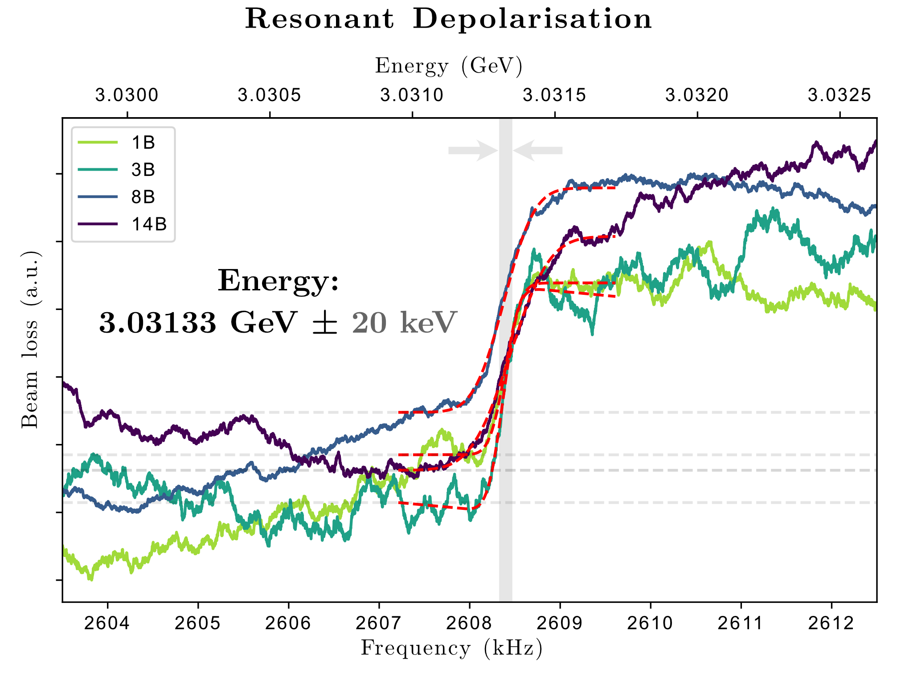

Polarisation¶
The electrons in the storage ring become polarised parallel and anti-parallel to the dipole magnet vector (up). The Sokolov-Ternov effect states that with the emission of synchrotron radiation, there is a probability to spin flip, which is naturally skewed toward anti-parallel (spin flip up-to-down) such that polarisation of the beam (after enough time) becomes:
which is a theoretical maximum. Imperfections in the magnet fields and strong IDs such as wigglers can reduce the maximum achievable polarisation. At the Australian synchrotron, the polarisation advances to \(1 - 1e^{-n}\) every \(t_{\textrm{pol}} \approx\) 13 min (58%, 26 min = 80%, 39 min → 88%).
Beam Loss¶
The dominant cause of beam loss is (typically) Touschek scattering, where colliding electrons exchange momentum and are subsequently lost through upstream bending and focussing fields (i.e. they are outside the momentum acceptance). The Touschek scattering cross-section is polarisation dependent, and therefore we expect longer beam lifetime for a polarised beam. Polarisation dependence arises from Pauli repulsion; a consequence of positive exchange and correlation energies between electrons.
Spin Tune¶
The electron spin precesses about its polarised axis (up or down) at frequency given by the spin tune \(\nu_\mathrm{spin} = [a_\mathrm{g}\gamma]\), where \(a_\mathrm{g}\) is the anomalous gyromagnetic ratio, \(\gamma = E/mc^2\) is the Lorentz factor, and the square brackets indicate the fractional part of the spin tune (i.e. for AS \(\nu_\mathrm{spin} = [6.833] = 0.833\)). Measuring the spin tune \([a_\mathrm{g}\gamma]\) provides an accurate measurement of the beam energy through \(\gamma\), where the limiting factors of accuracy are the physical measurement of the spin tune, both the anomalous gyromagnetic ratio and the rest mass of the electron which are both known fairly accurately, resulting in keV resolution for a GeV beam.
Depolarisation¶
Using a time varying magnetic field (applied to one of the kickers), we can kick the spin axis of the electrons off polarisation each turn, and due to the natural spread of energies (and therefore tunes), this results in a depolarised beam. In the experiment, the frequency of the magnetic field is swept over the expected spin tune, and at that resonant condition (\(f_\mathrm{rdp}\)) the beam will depolarise, resulting in measurable beam losses. The step-increase in the beam losses is fitted, giving an accurate measurement of the spin tune and therefore beam energy via:
where \(f_\mathrm{rev} =\) 1.38799 MHz is the beam revolution frequency.

L. Arnaudon et al., “Accurate determination of the LEP beam energy by resonant depolarization,” Z. Phys. C: Part. Fields, vol. 66, no. 1, pp. 45–62, Mar. 1995, doi: 10.1007/BF01496579.
Complications¶
Spurious polarisation changes¶
Changes in polarisation can be caused by a number of things in the ring, in particular wiggler field and undulator gap changes. These changes in polarisation also manifest as changes in beam loss, which can obscure the energy measurement. This is especially true as in order to preserve beam quality, only a small kick is applied, but this also reduces the strength of the depolarisation feature.
To greatly reduce the effect of unintended polarisation changes on the data, the ratio of the beam losses from two charge-equivalent halves of the beam is taken. One half is depolarised, while the other is untouched. This way, any spurious polarisation change due to ID changes - common to both parts of the beam - is removed during the normalisation. The resultant data includes only changes in beam loss due to resonant depolarisation.
Wiggler fields¶
The theoretical maximum polarisation achievable (\(P_0\) shown above) is unfortunately proportional to the magnitude of the magnetic field felt by the electrons around the ring. As such, strong wiggler fields both decrease the maximum achievable polarisation and increase the polarisation time by a factor of:
Reduction in the polarisation of the beam results in a smaller change during resonant depolarisation, and therefore a weaker resonant peak in the data.
Sidebands¶
Sidebands around the main (depolarisation) resonance frequency are created due to a coupling between the spin tune and the synchrotron oscillations. The separation between the sidebands and the main frequency equals the synchrotron frequency (\(\omega_\mathrm{synch}\)).
For AS, \(\omega_\mathrm{synch} =\) 11.757 kHz (118 turns), corresponding to a tune of 0.00847. The sideband frequencies:w are given by:
where \(n\) is an integer.
Crossing betatron resonances¶
In the extremely unlikely case that the vertical betatron tune is very far off its nominal frequency (or mirror tune) lands inside the scan window, this diagnostic has the ability to transiently drive the beam. This is not of major concern due to the fact that we are scanning fairly fast over the tune (5 Hz/s) and the fact that the betatron tune will change as the beam is driven. Still, it should be mentioned as a possible source of a beam dump.
Beam loss monitors¶
ADC counter masks¶
As aforementioned in a previous section, the diagnostic takes the ratio of the beam losses between two charge equivalent halves of the beam, one of which is depolarised and the other is left untouched. This is made possible by the Libera beam loss monitor system which allows two separate ADC masks per revolution clock (SROC), meaning beam losses on different portions of the fill pattern can be collected independently.

Libera beam loss monitor product page (i-tech)
Mask alignment with bunch-by-bunch¶
The two ADC masks are bounded at each end by SROC. This causes a few undesirable consequences. As the BLMs are evenly distributed around the ring, only a small number will be aligned with the bunch-by-bunch (BbB) depolarisation mask. As you travel around the ring, you accrue a phase shift between the masks. At shifts of \(\pm \pi/2\), each mask contains an equal number of polarised and depolarised bunches and therefore no features will be detected.
To align the BbB to at least one sector, we utilise the integrated_loss
stream of the BLMs. The losses over many turns are integrated, and the
resulting output reconstructs the fill pattern as a function of ADC clock
cycles (instead of bunch number). Using the known shape of the fill pattern
(300 filled buckets, 60 empty ones), we divide and align the masks between the
BbB and the BLMs. Functionally, we look for the empty buckets for calibration
and calculate the offset between the two systems.

Each number denotes the sector, letters: A=straight, B=bend. Purple and yellow regions indicate the two masks, as aligned to sector 1.Data analysis¶

Step-edge detection¶
The step-like loss pattern that indicates crossing the depolarisation resonance is non-trivial to isolate due to the SNR and slope / linear component in the data sets. Using a standard kicker strength (50%) and sweep rate (5 Hz/s), the width of the step becomes consistent.
Taking the derivative of the step-loss over a moving window equal to the typical step width produces a mostly flat curve with a peak around the step location with good consistency.
Use of different kicker strengths and sweep rates should be used with caution. There is in-built prediction of the change to the step width, but may not work at the parameter extrema.
Curve fitting¶
The data is best fit with a sigmoid function - the sum of a cumulative distribution function and a linear slope. The diagnostic calculates the goodness of fit \((R^2)\) and only accepts results above a threshold.
The fitting stats are reported, and typically results in errors of 10 keV \((1 \times 10^{-5} \text{ GeV})\), although the diagnostic can achieve precision of 1 keV \((1 \times 10^{-6} \text{ GeV})\).